Does the order of the plays matter?
Two ways in. First, the streak question: give the defense a look, then strike. Then the math version: play-calling as a Markov chain, in three pictures, and what the chain says about NFL callers.
Give them the look, then strike
Show the defense the same personnel group snap after snap, then cash in. Does it work, for whom, and does it hold once you take the survivorship out?
The survivorship problem, and what was done about it. A personnel group stays on the field partly because the drive stayed alive, so a "5th straight look" is drawn from drives that were already working. Two fixes. Streaks now restart with every drive, so a 3rd straight look is the 3rd straight snap of the same drive, which is what the defense actually sees. And every play is compared with the league average for the same down and distance, the same position in the drive and the same streak depth, so whatever the league gets from being deep in a live drive is gone before any caller is scored. What remains is the caller's own edge at that depth, which includes his drives staying alive more than the league's because he is good. That is the thing being measured, not a bias. (For the record, the league's raw streak curve was nearly flat to begin with, within 0.01 EPA of zero at every depth, so the earlier chart was not badly fooled; the within-drive definition is the bigger change.)
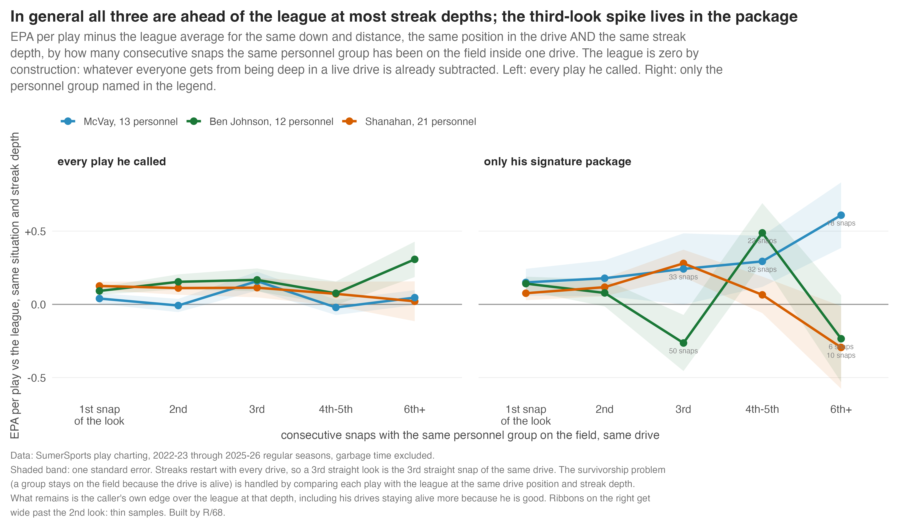
What it says. In general, all three are good at every depth: the "is he just better" answer is yes for Shanahan and Johnson (ahead of the league at all five depths) and mostly for McVay. The give-them-a-look shape, the climb to a third-snap peak, is not a general thing for any of them. It lives in one place: Shanahan's 21 personnel, where the third straight snap runs +0.28 against the league at the same depth, on 145 snaps, after the survivorship fix. McVay's 13 is ahead everywhere, but past the second look it is 18 to 33 snaps per depth, one season of data. Johnson's 12 has a hole at the third snap (−0.26 on 50 snaps) that is as likely noise as anything.
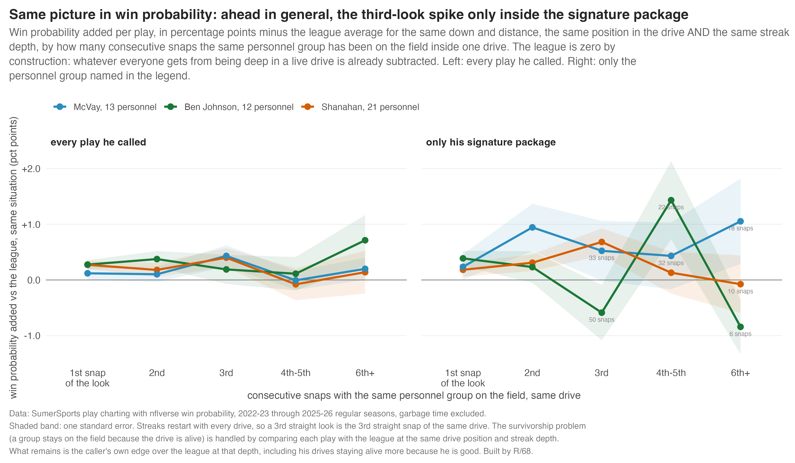
Shanahan by season, because 2023-24 was the bet. It was the year the third look paid most: +0.46 EPA on the third straight snap of 21 against the league at the same depth (35 snaps), versus +0.15, +0.21 and +0.30 in the other three seasons. It was also the year his play order gave away the least: his play-family chain carried 0.004 bits beyond situation in 2023-24, a tenth of the league, and it climbed to league-plus in the two seasons since. The hold rate in 21 and the share of snaps in 21 barely moved across the four years. Same look every year; the order of what came out of it was quietest in the year it paid most.
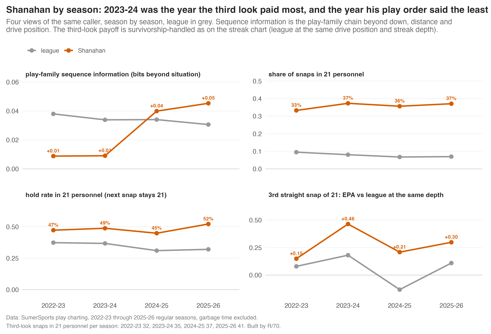
Sequenced vs not. The direct version of the question: does a play where the look stayed earn more than one where it changed? This one has a trap. Repeats are mostly a run after a run, and runs earn less than passes at the same down, so a naive version says "repeating costs you 0.05 a play" and is really saying "you ran again." Score each play against the league at the same down, distance, drive position, score, half and the same play family (or personnel group), and the gap goes away: +0.013 for staying in the personnel group (z = 1.2), −0.003 for repeating the play family (z = −0.2). Per caller, one clears two standard errors on the upside and two on the downside, which is what 32 coin flips produce. Staying in the look is not where the value is; what you do out of it is.
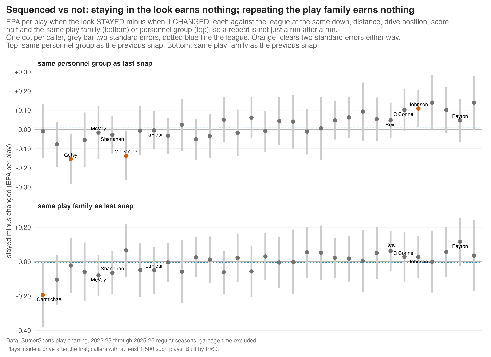
The earlier version. The chart that went out on Thursday (R/64) counted streaks across a whole game and adjusted for down and distance only. Its numbers are close to these, which is the reassuring part: Shanahan's 21 peaked at +0.28 there and +0.28 here. The film reel for that card, nine straight snaps of 21 personnel against Chicago with eight different plays, is on the board.
A Markov chain is a coin that remembers one thing
The next play depends on the last play. Only the last one.
Every arrow is a "how often." From a run, the league runs again 41% of the time and drops back 59%. That table of arrows is the whole chain.
Real numbers: every same-drive play pair in the NFL, 2022-23 through 2025-26, with the eight play families folded down to run and pass.
Try it. Call plays with the chain.
Each click rolls the dice using only the last play. Watch the long-run mix settle no matter how it started.
Dashed outline: where the mix ends up if you call forever. That is the chain's steady state, and it is the same from any starting play.
The chain forgets. Fast.
Start from a screen. Start from a deep shot. Two plays later the odds for what comes next look the same. How fast the starting point washes out is the chain's memory, and we measure it the way you measure anything that fades: by its half-life.
Think of the last play as a tip. Right after the snap, the tip is worth 100% of whatever it is worth. Every play that goes by, some of it washes out, because the chain keeps rolling its dice. The half-life is how many plays until half of the tip is gone. A half-life of one play means next snap you still have half the tip. A half-life of 0.4 plays, which is what NFL callers run, means that by the very next snap more than half is gone, and two snaps later there is nothing left. The number falls straight out of the chain's transition table (its second eigenvalue, for the math-curious).
Dashed outline in both: the caller's steady state, where the chain ends up if you let it run forever. The left side still leans on the starting play; the right side has nearly forgotten it. "Situation alone" is the half-life you get if you shuffle the caller's plays within down and distance: the memory that exists only because a first-down run hands you second-and-medium. The gap between the two numbers is memory the caller himself adds.
You're the defensive coordinator. Guess the next play.
You know the last play. Pick what comes next. The game keeps score two ways: your guesses, and a dummy who always guesses the caller's most common play and never looks at the last one.
Sequencing is real, tiny, and worth nothing
Eight play families as the states. Every same-drive pair of plays, four seasons, 32 callers. Five questions, each tested against a shuffled version of itself so thin cells cannot fake a signal.
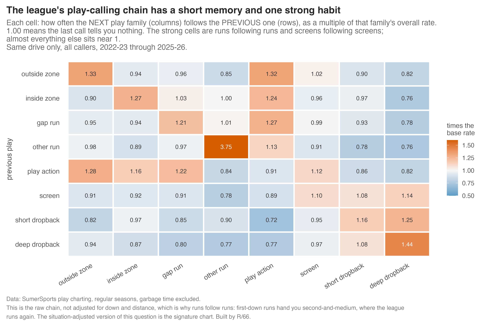
1. Does a caller's last play predict his next one, beyond the situation? For most of them, yes, and it is small. The information is real (it clears a shuffle null by three standard deviations for of callers) but a defense guessing the play family gains about extra correct guesses per 100 plays from it on average.
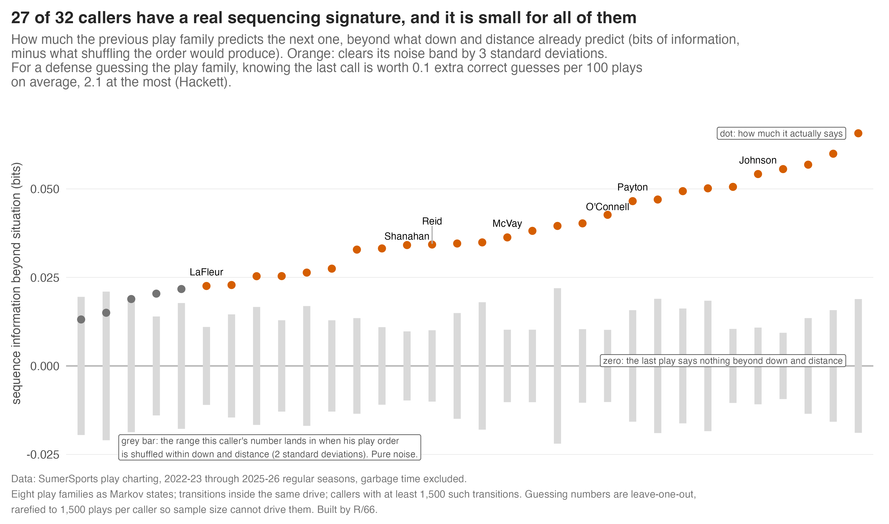
2. How long does the chain remember? Under half a play. Half-life is how many plays until half of what the last call told you has washed out. Every caller's sits between 0.3 and 0.5 plays: by the next snap more than half is gone, two snaps later all of it. Situation alone (first-down run, then second-and-medium, then a run again) creates a half-life of about 0.25; the caller's own habits add the rest, and the rest is small.
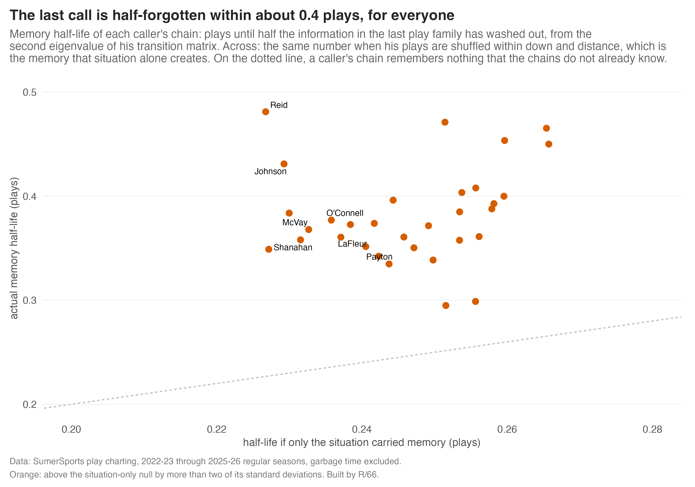
3. Does the play two back matter, once you control for drive length? This is the tricky one. A play with two predecessors is by definition the third play of the drive or later, and deep-drive plays are a different population: the drive is working. So both orders are measured on the same plays (third in the drive or later) and both condition on where in the drive the play sits as well as down and distance. Result: the play two back adds something for of callers, and across the league it is worth about of what the play one back is worth. One play of memory is most of the story; two is a footnote.
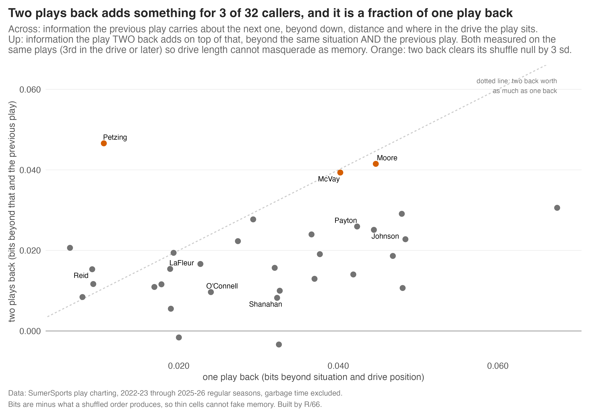
3b. Does the chain have to be one play back? Give it the whole drive. A Markov chain conditions on its state, and the state is whatever you define. So the state was widened to a summary of the drive so far: runs so far, play-action fakes so far, and the personnel streak as it stood before the snap. The first pass looked enormous (five times the last play) and was wrong twice over: it leaked the current snap's personnel into the "history," and it knew nothing about the score. A drive full of runs mostly means a lead and a clock to kill. With the current look removed and score and half in the conditioning, the drive's history still carries real information for 28 of 32 callers, about the same size as the last play does (0.02 to 0.06 bits per caller). Nearly all of it is one thing: whether the caller has already faked in this drive. After a fake earlier in the drive, the next play is a run 50% of the time against 44% without one, in one-score games on early downs. Callers fake and then lean on the run they just sold.
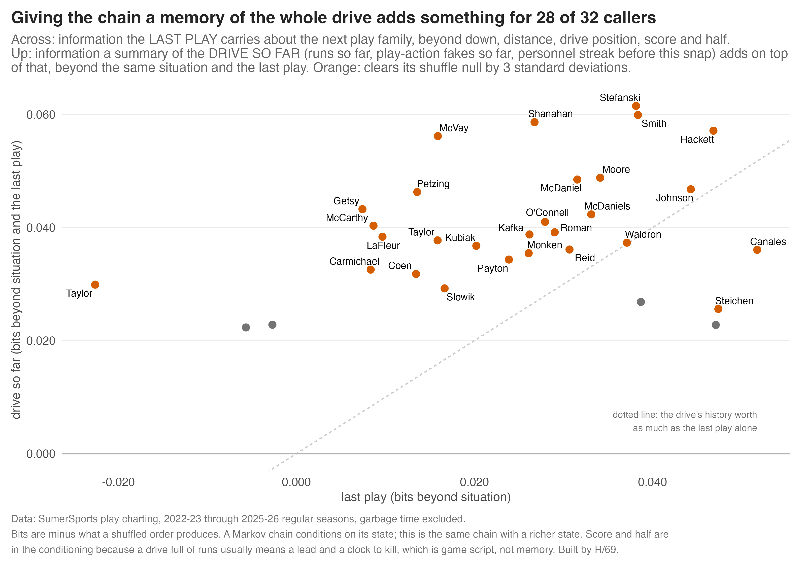
3c. The chain over personnel groups, which is what the streak chart lives on. Redefine the state as the personnel group on the field (11, 12, 13, 21, 22, 10, other) and the chain changes character. It has real memory. The league holds its group on 58% of snaps; hold rates run from 43% (Monken) to 85% (McVay, the stickiest caller in football). The last group predicts the next one for 31 of 32 callers, at 0.13 bits beyond situation, score and half, four times what the play-family chain carries. Its memory half-life is 0.7 plays against 0.15 for a shuffled order. Shanahan is a rotator, not a holder: 52% hold, below the league, which is the point of a 21-personnel look that only shows up when he wants it. Reid is the other extreme: a 46% hold and almost no sequence information, his personnel is close to memoryless.
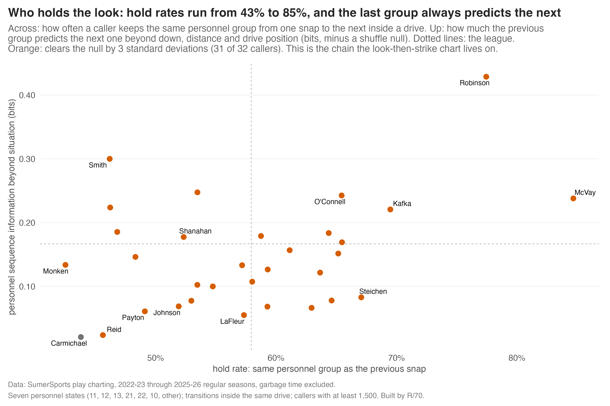
And the depth of that memory, same three questions. Last group, group two back, the drive so far, all with score and half controlled and all on the same plays. The last group carries 0.13 bits for the league. The group two back adds 0.02 beyond it (13 of 32 callers clear the null). The drive so far adds 0.02 (5 of 32). The personnel chain is first-order: the last group is almost the whole story. The exceptions are worth knowing. McVay's personnel has the deepest memory in the league, both two-back and drive-level clear the null comfortably, and Shanahan's drive history is the second strongest. Johnson's personnel has no memory beyond the last group at all.
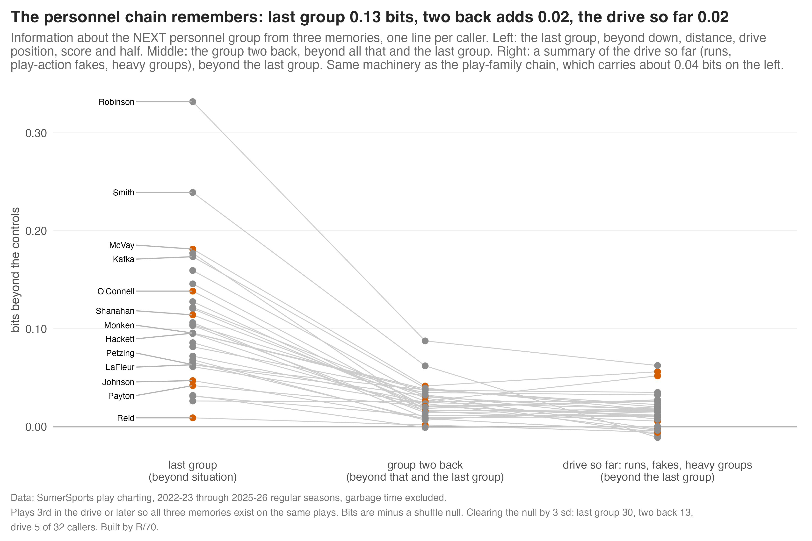
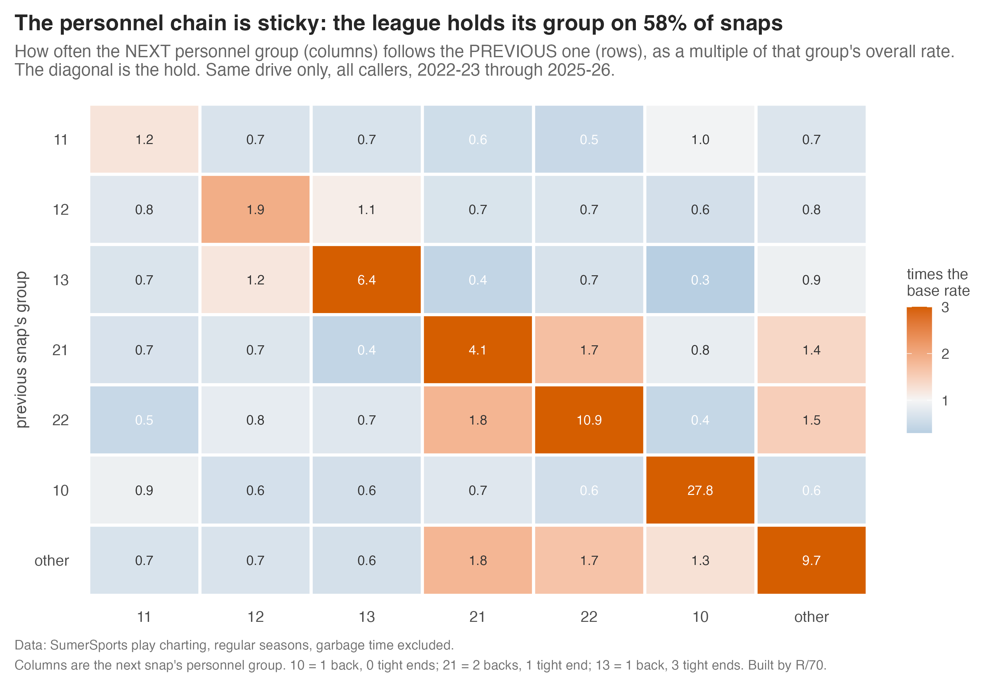
4. Does the setup play change the result of the next one? No. For all 64 play-family pairs, the next play's points were compared with the league average for that down, distance and play family. of 64 pairs clear the noise. Outside zone into a deep shot, the best-looking pair, is +0.11 points on 1,152 snaps and does not clear it either.
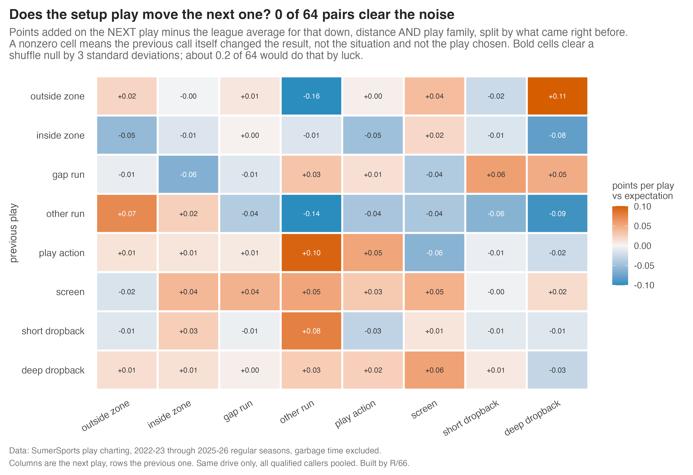
5. Does any caller earn an edge from his sequencing? No. Steering the chain through the league's best pairs is worth under points per 100 plays for every caller, and no caller's own pairs carry value beyond his shuffle null. For scale, a good caller beats an average one by 5 to 8 points per 100 plays on situation-adjusted EPA. Sequencing is not where that gap lives. Only two callers sit to the right of zero, meaning their order leans toward the league's better pairs at all: Liam Coen (+ per 100 plays) and Ben Johnson (+). Johnson's case is the interesting one because he is also top-five in sequence structure: he has habits, and his habits happen to run through the pairs that pay. Coen's do too, with half the track record. Neither is a tenth of a point.
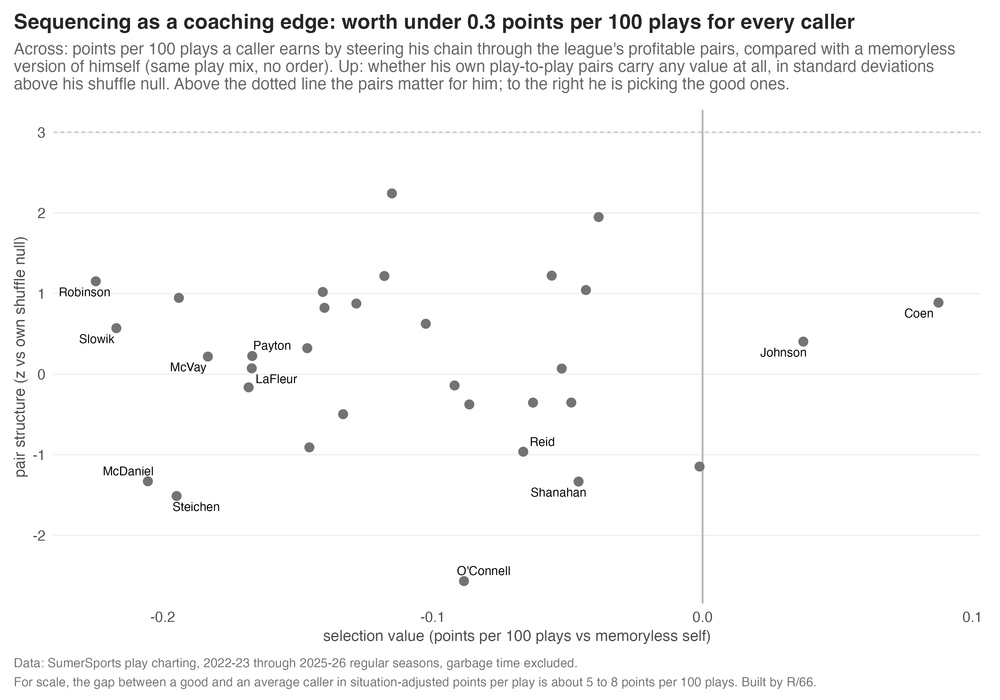